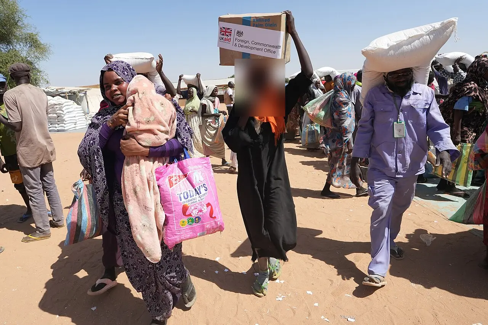
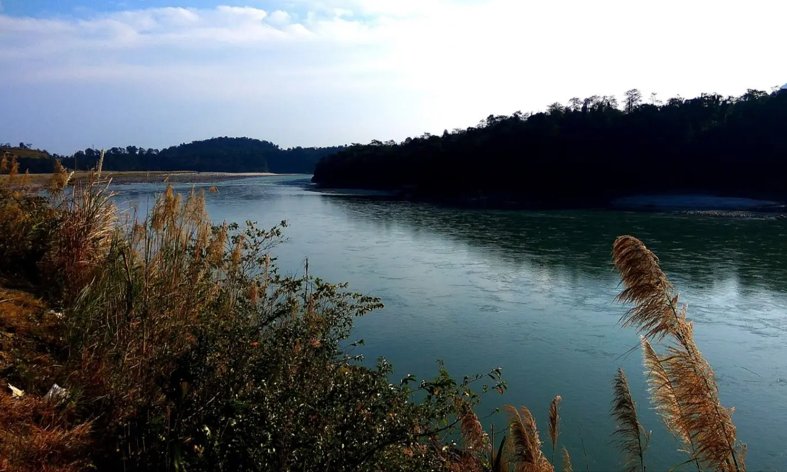
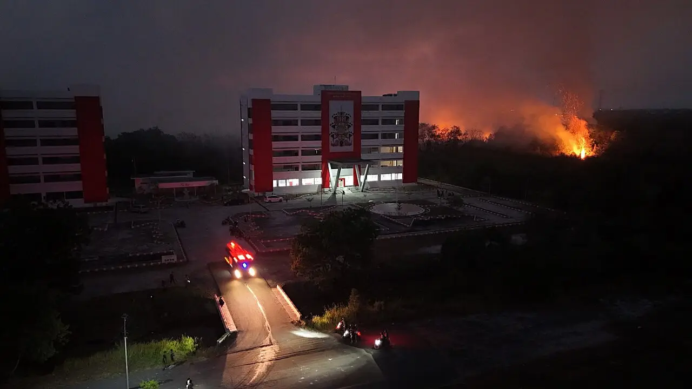

A non-partisan daily record of human rights and civil liberties in India and around the world. Every fact links to its source.
What happened to people's rights in the last 24 hours, with the official position next to every claim. A new edition every morning at 9:00 IST.
One place or issue told in depth, with photos and a source for every fact. Updated whenever something changes.

Since 15 April 2023, fighting between Sudan's army and the paramilitary Rapid Support Forces has killed at least 59,000 people by one count, and possibly far more, and driven about 13 million from their homes. Both sides deny targeting civilians. The war now reaches into Abyei and South Sudan.
Updated 30 Oct · What's new
Villages along the Siang oppose an 11,000 MW dam that would submerge 27 villages. After arson in Pasighat on 23 October, police say 69 people have been arrested and over 200 served notices; opponents marched on 29 October and refuse talks until detainees are freed.
Updated 30 Oct · What's new
Fires in Kalimantan and Sumatra have burned more than 1.9 million hectares this year, a satellite monitor says, and sent smoke across Southeast Asia. Indonesia's government calls the haze largely natural; researchers and environmental groups say people lit the fires.
Updated 29 Oct · What's newPeople held for a long time after speaking out, protesting, reporting or providing care, in India and around the world. Checked against sources every Sunday.
Every edition is kept permanently, each in its own layout.
Sudan: UN warns Kordofan sieges risk new atrocities; Gaza: Five killed in Gaza strikes after Israeli vote
Nyala: Drone strike on Nyala market kills dozens; Pasighat: Curbs stay in Pasighat; detained activist's health worsens
El Fasher: A year after RSF takeover, thousands may be held; Gaza: Strike on Mawasi camp kills girl, 7
Gaza: Eight killed, three at Gaza university; Taraba: Toll in Taraba village attack rises to 40
Hebron: Families displaced in Hebron military operation; Gaza: Two killed in Gaza despite ceasefire
Sudan: UN: drones killed 306 in Sudan in October; Karak: Gunmen kill seven at church funeral in Jordan
Abyei: Khartoum denies Abyei strike; probe sought; Gaza: Four killed in Gaza despite ceasefire